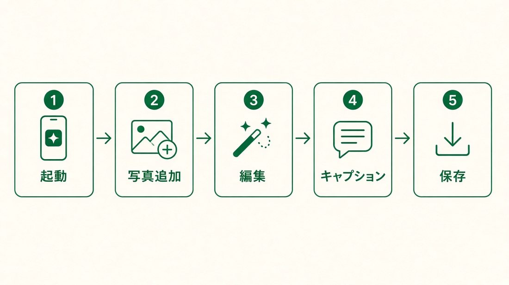
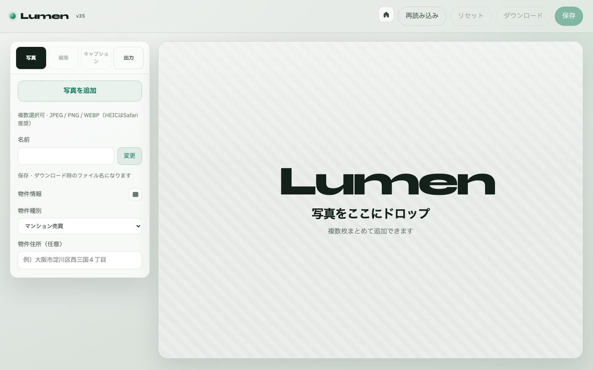
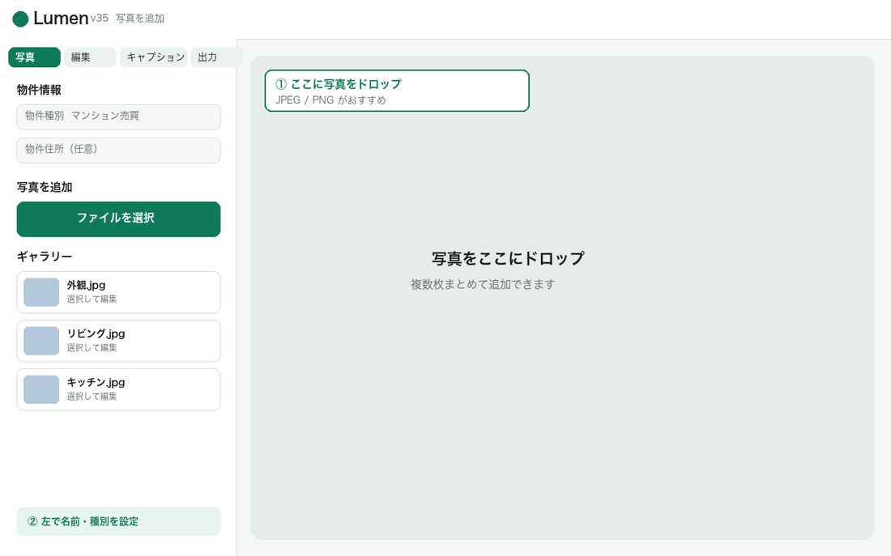
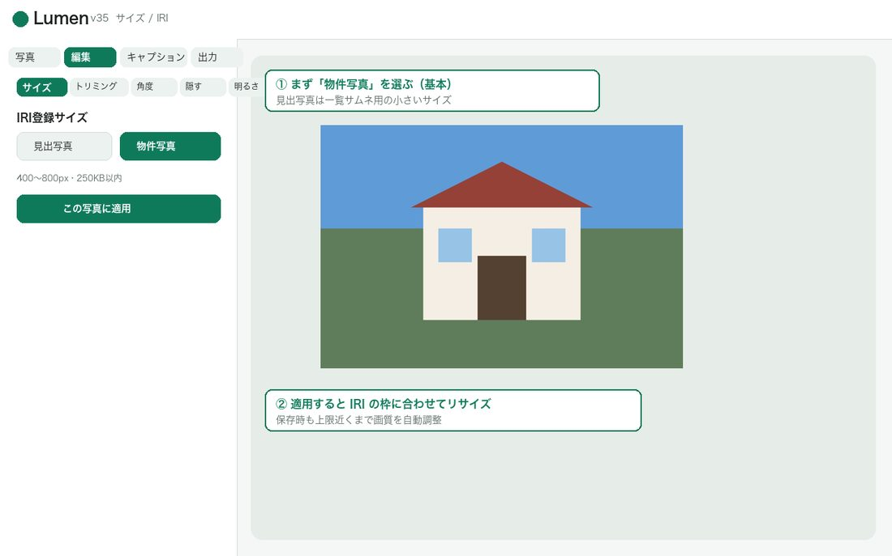
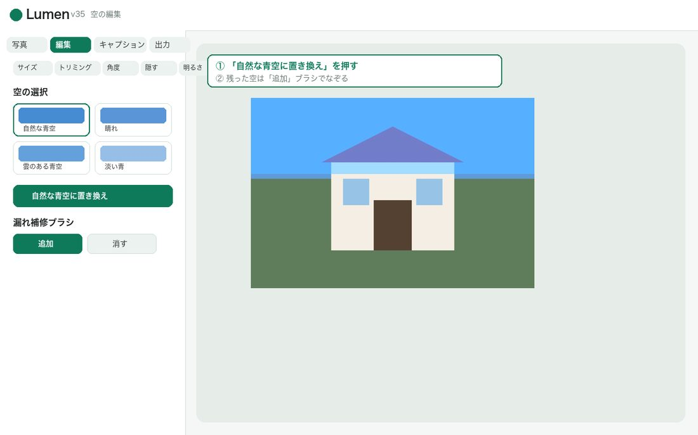
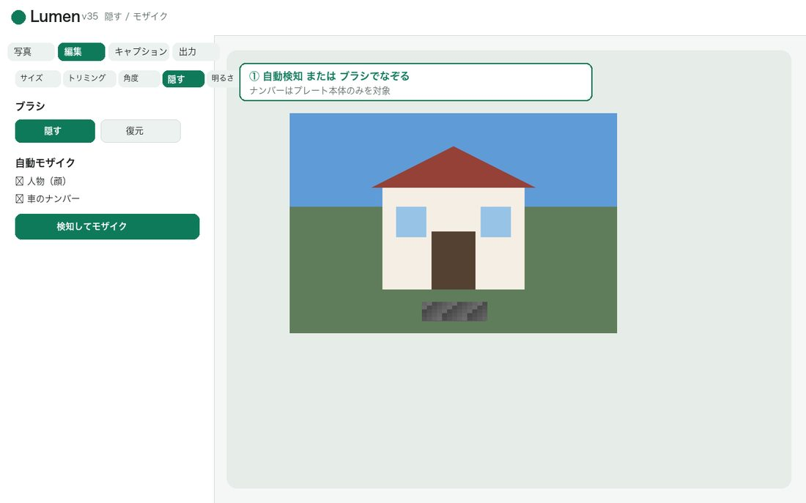
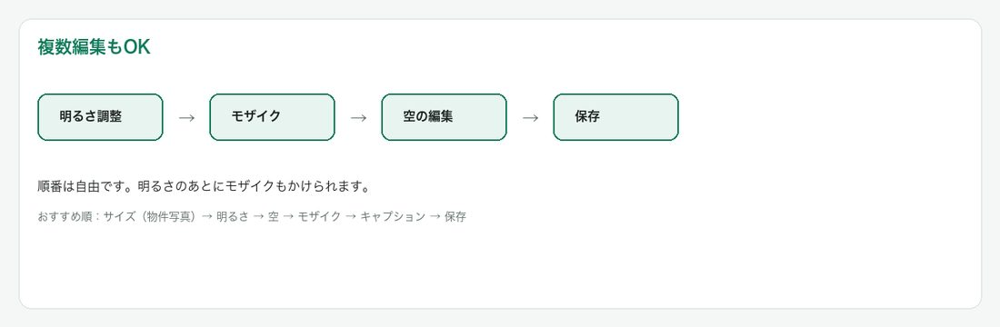
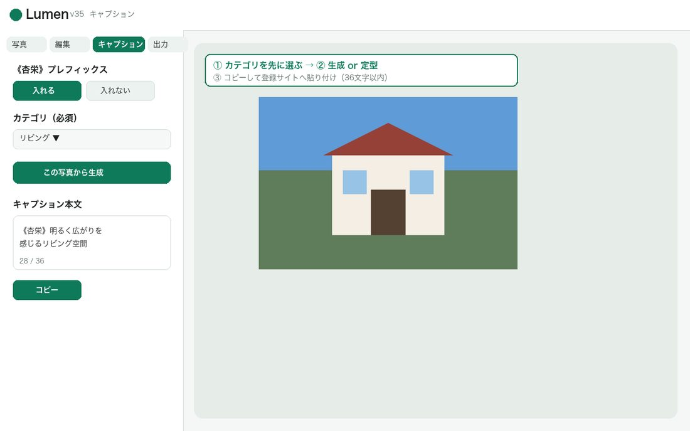
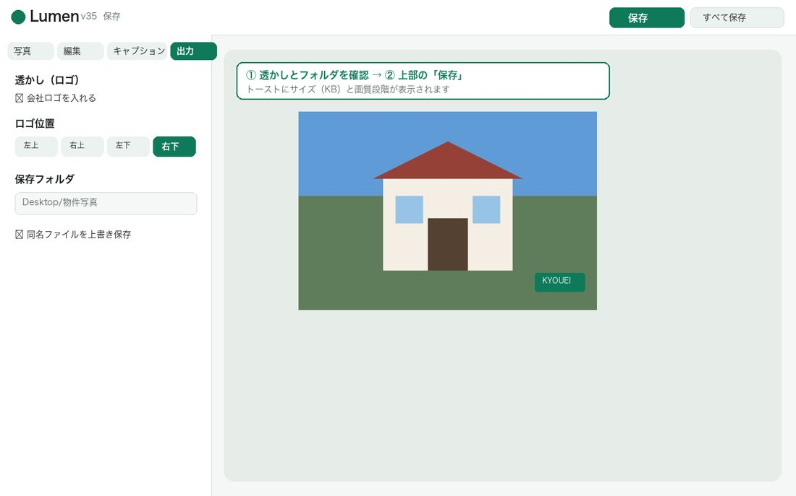

不動産写真の編集・キャプション・保存までを画面つきで解説

Chromeで開いた直後の画面です。ここに写真をドロップするか、左パネルから追加します。

開く.command または Lumen起動.app を再実行してください。写真を追加し、物件種別・住所・各写真の名前を設定します。名前はそのまま保存ファイル名になります。

基本は「物件写真」（400〜800px・250KB）。見出写真は一覧用の小さいサイズです。

「自然な青空に置き換え」→ 残った部分は漏れ補修ブラシの「追加」でなぞります。

人物・ナンバーを自動検知するか、ブラシで隠します。ナンバーはプレート本体のみ対象です。

明るさのあとにぼかしなど、順番を変えても大丈夫です。

カテゴリを先に選び、AI生成または定型文。最終は36文字以内。《杏栄》は入れる／入れないを選択。

出力タブで透かし・フォルダを確認し、上部の「保存」または「すべて保存」を押します。
